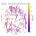
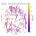
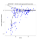
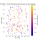
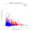
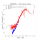
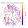
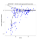
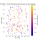

(MHz)
(arcsec)
-1.03 ± 4.12 (Dec)
 

| SBID | Project | Date | Duration (hours) |
Field Centre | Central Frequency (MHz) |
|---|---|---|---|---|---|
| 2019-01-10T02:03:58.9 | 10:54:00.2471 +57:20:35.988 | 1385.23 |
| APERCAL version |
QA_reporter version |
Synthesised Beam (arcsec) |
Median r.m.s. (uJy) |
Image peak (Jy) |
Dynamic Range | Sky Area (deg2) |
|---|---|---|---|---|---|---|
| 18.9 x 11.2 | 128 | 0.70 | 3E+03 | 11.12 |
| Source Finder | Flux Type | Number of sources (≥5.0σ) |
Multi-component islands |
Sum of image flux vs. sum of catalogue flux |
Median in-band spectral index | Median int/peak flux | Source Counts χred2 |
|---|---|---|---|---|---|---|---|
| aegean | integrated | 1322 | 71 | 9.2 Jy vs. 9.7 Jy | 1.14  | 2.48  |
| Survey | Frequency (MHz) |
Cross-matches | Median offset (arcsec) |
Median flux ratio | Median spectral index |
|---|---|---|---|---|---|
| NVSS | 1400.0 | 518 | -0.56 ± 4.48 (RA) -1.03 ± 4.12 (Dec)  |
0.74 ± 0.43 (extrapolated)  |
| Flux Ratio (APERTIF / NVSS-extrapolated) |
Flux Ratio Uncertainty (APERTIF / NVSS-extrapolated) |
Positional Offset (arcsec) (APERTIF — NVSS) |
Positional Offset Uncertainty (arcsec) (APERTIF — NVSS) |
Resolved Fraction from int/peak Flux (APERTIF) |
Source Counts χred2 (APERTIF) |
r.m.s. (uJy) (APERTIF) |
|---|---|---|---|---|---|---|
| 0.74 | 0.43 | 1.17 | 6.09 | 0.23 | 2.48 | 128 |
Generated at 2019-03-15 10:53:50